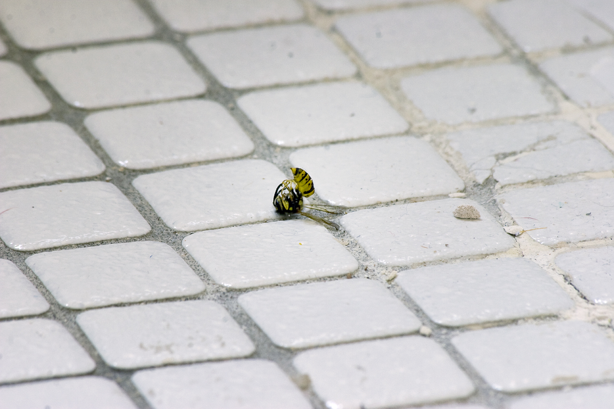

Deleuze & Guattari, Rhizomes: "The orchid leaves its own territory by forming an image, by imitating a wasp; but the wasp returns to its territory in this image while leaving its turf at the same time and becoming part of the orchid’s reproduction apparatus; the wasp reterritorializes the orchid by carrying pollen . . . capture code, surplus-value code, increase of valence, a true becoming, becoming-the-wasp of the orchid, becoming-the-orchid of the wasp." What is (de/re)territorialized, what modes of mimesis occur, when stinger meets flesh?
When my sister and I were children, Appa used to sit between our beds and read to us from Valmiki’s Ramayana, the Mahabharata, and Tales and Parables of Sri Ramakrishna. In these stories, the body is variously highlighted and discarded. Karna is cursed for failing to express pain at a bee’s sting, and later skins off his divine golden armor and earrings, part of his body since birth. Indra angers a sage by seducing his wife Ahalya and is cursed so that his body erupts with a thousand cunts, which Shiva out of pity transforms them into eyes. Beautiful Ahalya is cursed to (social) invisibility. Kumbhakarna, man-eating rakshasa, vacillates between extreme fatigue and insatiable hunger, and is slain for this monstrous quality. When Ravana’s servants set fire to Hanuman’s tail, Hanuman uses it to burn all of Lanka, and likely feels the pain until Sita prays to Agni to abate it. The sage Vishvamitra, whose violent temper is legendary, terrifies the heavens with his exquisite bodily mastery. Anyone can become a god. All it takes is a Cartesian split. But, somewhat contradictorily, we’re never allowed to forget that the gods have bodies that escape or exceed their bounds, must be indulged, unexpectedly transgress.
I joke that I’m a “bad” Sri Lankan-American Tamil. I understand but can’t speak my mother tongue. I’m not religious. Born in New York, the product in many ways of American schools, I’m grounded in Western thought, but these stories were my first decolonial forays into feminism, materialism, embodiment, and phenomenology. Appa has ascended to the heavens, so today I return to these ancient myths alone, perceiving in them queer, crip, elsewhere ways of rereading the world, and my fibromyalgic bodymind in it.
This is the page where I’m meant to give credit where credit is due, which means listing the names that prove I possess the capital to produce academic work, embedded as I am in institutions of intellectual endeavor. Contrast this with Foucault was invited after all because he’s Foucault, has a history of being Foucault, past outweighing present., speaking as the masked philosopher because “a name makes reading too easy.” Names think for us, imposing intelligibility, underscoring our settled habits of thought about knowledge and our relation to it. Names tell us who we’re supposed to know.
I’ll give you names you don’t. Mary Krienke, my literary agent, who recognizes that words can undo you. Sara Fuller, my physical therapist and visual arts collaborator, who has cunning in her fingers, for whom the skin, fascia, muscles, and organs speak as one. Anji தங்கச்சி, co-conspirator, confidant, sister, friend, first audience for the stories I tell. Athena, my cat, who reminds me daily that energy is precious and stretching essential. Katie McCollough, who mentored candidly and without judgment. Andrea Olinger, at whose encouragement I began pursuing my doctorate, who has always been there for me, and who saved my life.
Jack Bratich, my adviser, for patience and accommodation as I changed medications, changed research focus, went under the surgical knife twice, and perpetually postponed deadlines due to full-time teaching and fibromyalgia. Marija Dalbello, for discussions about phenomenology, tactility, paper art, and cats. Susan Keith, for finding time and making space for my anxieties, gifting me with her storytelling, and driving me from Brooklyn to Manhattan two days after my appendectomy, when walking was still disorder. Melanie YergeauAt Computers & Writing 2014, where she delivered this keynote, I disclosed my disability to her and to Cindy Selfe, in a public professional setting, for the first time. My appendix hadn't ruptured yet, but it was still a watershed moment for me, that I wasn't immediately rejected., whose encouragement to “disable all the things” lifted the veil through which I viewed my pain only partially, and thus in many ways seeded this project before I knew I had it in me.
Amma, for refusing to arrange my marriage and insisting I put my education and career first. And my late Appa, who showed me where the red thread of ocularity was located in B. Gouldiana with a microscope, scalpel, and tweezers, and who realized when he began the long process of dying that pain and chronicity evade description.
Really, I did this for When you clapped your feet to find them, your face helpless to explain, you were beyond knowing, but I tried, here, to make us a language.
Gratitude, like chronic pain, is a shifting matrix. I am indebted to this shipwreck body I repeatedly dive back into, with a knife, a camera, a book of myths (Rich, 1973: 22-24), overturning debris and treasure to find establishing proof that truth is not what is behind the rotted cabin door, truth is the door itself, there are more doors than eyes or cunts allow.
The masked philosopher said: “I can’t help but dream about a kind of criticism that would not try to judge but to bring an oeuvre, a book, a sentence, an idea to life; it would light fires, watch the grass grow, listen to the wind, and catch the sea foam in the breeze and scatter it, it would multiply not judgments but signs of existence; it would summon them, drag them from their sleep… it would bear the lightning of possible storms” (323). Disallowing this, that’s pain. But we do. Work alone. Abjure ourselves. So discover something in this absence of names or difference of their incorporation. Anonymous and highly charged, dive into the wreck, look for the body and not the received doctrine of the body, “the thing itself and not the myth” (Rich, 1973: 23).
Risk contagious transformation.